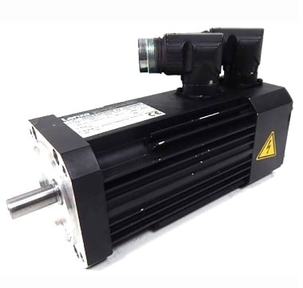
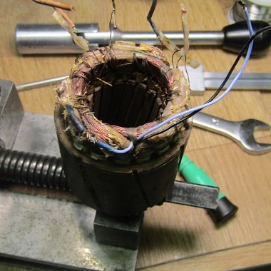
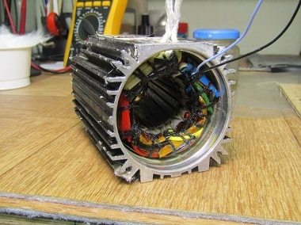

ПЕРЕМОТКА СЕРВОДВИГАТЕЛЕЙ И СЕРВОМОТОРОВ
На многих промышленных предприятиях и производствах применяются серводвигатели и сервомоторы. Они применяются для точного перемещения и имеют хорошие динамические характеристики.
Производитель предоставляет гарантию 1 год. В целом сервомоторы работают намного больше гарантийного срока. Продолжительность безаварийной работы очень сильно зависит от нагрузки на валу двигателя и режимов его работы.
Выбор двигателя с запасом по мощности позволит увеличить надежность работы, но это также приведет и к увеличению стоимости оборудования.
В последнее время все чаще встречается оборудование, спроектированное впритык к указанным характеристикам исполнительных устройств.
Длительная работа серводвигателя на пределе режимов его эксплуатации приводит к преждевременному выходу из строя серводвигателя.
Неисправности серводвигателей ( сервомоторов )
Наиболее частая неисправность по механической части: повышенный износ или поломка переднего (заднего) подшипника вала двигателя.
Наиболее частая неисправность по электрической части: обрыв, замыкание на корпус или межвитковое замыкание статорной обмотки серводвигателя.
Разберем одну из частых неисправностей – визуально это обгоревшие силовые обмотки серводвигателя.
Эта неисправность происходит из-за:
- 1) механического заклинивания вала серводвигателя во время работы;
- 2) попадания влаги или другой жидкости во внутрь сервомотора.
В Сервисный центр поступил на перемотку серводвигатель ( сервомотор ) Lenze MDSKSRS036-23 с неисправными обмотками.
Специалисты сервисного центра произвели проверку обмоток статора. Выявлено межвитковое замыкание.
Следующим этапом идет разборка и извлечение катушек обмотки статора. После производится перемотка катушек статора. Работа эта трудоемкая и занимает обычно от 7 дней.
Далее идет сборка, настройка энкодера сервомотора. Конечно не забываем поменять сальники и подшипники на новые. После проверки работы двигателя совместно с сервоприводом (серводрайвером) двигатель отправляется к Заказчику на оборудование.
На серводвигатель после перемотки предоставляется гарантия 6 месяцев. Покупку нового мотора проводить очень дорого. Перемотку дешевле производить минимум в 2 - 3 раза.